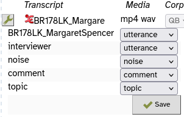
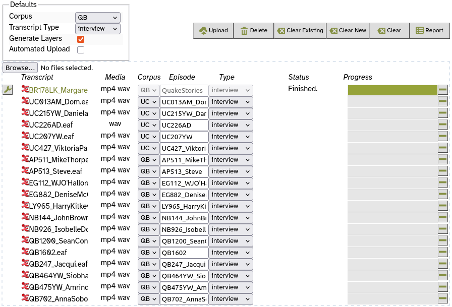

Upload Data
In this exercise you will:
- Set up the basic structure of your database
- Upload a transcript manually
- Upload many transcripts at once using the batch uploader
- Import participant meta-data from a CSV file
After this you will have a small corpus in your LaBB-CAT database.
Before you start, download and unzip QuakeStories.zip so you've got the demonstration data for uploading to your corpus.
Corpus structure
In LaBB-CAT you can organise your transcripts and recordings into different sub-collections or ‘corpora’, and also categorise them by the type of speech they contain.
We are going up upload recordings that were made in two different locations, and we are going to set them up each as their own corpus, so first we will set up some corpus names…
- In LaBB-CAT, select the corpora option from the menu at the top.
This page shows a list of current corpora, which only contains one corpus, called corpus. - Above the “corpus” corpus, the column headings double as a form that you can fill in to add a new corpus. Fill in the following information:
- Name :
QB - Language : English
- Description :
Quakebox recordings
- Name :
- Press the New button to add the “QB” corpus.
You should see a message at the top of the page saying Record created and now the QB corpus is in the list, under the “corpus” corpus. - Add another corpus called “UC” with the description “Campus recordings”.
- We won’t actually be using the corpus called “corpus”, so we want to delete it.
To do this, press the Delete button to the right of the corpus corpus in the list. - You will be asked Are you sure you want to delete corpus?
You are sure, so press OK.
The row will be deleted from the list.
Now you have some corpora set up with the names you’ve provided.
The data we are using is a collection of stories about peoples’ experiences during the devastating earthquakes that hit the Canterbury region of New Zealand in 2010 and 2011. Some recordings are interviews, where an interviewer asks the participant questions, and others are monologues.
Now we’re going to set up these two transcript types…
- Select the transcript types option from the menu at the top.
You will see a list of transcript types, although there’s currently only one type in the list, called interview. - Above this, fill in the empty Type box with the word:
monologue - Press the New button.
You will notice that now the list has two transcript types, interview and monologue. A Save button has appeared, because your changes aren’t yet saved to LaBB-CAT. - Press the Save button.
You will see a message at the top saying Layer saved: transcript_type.
Now that we have a basic structure for the data, we are going to look at how to upload data…
Manual Upload
- In LaBB-CAT, select the transcripts option in the menu.
- Press the Upload Transcript icon.
You will see a page with some options to select on the top left, buttons on the top right, and in a middle, a rectangle with a dashed border; this is the ‘upload queue’, which lists files we want to upload. - In the top left corner of the ‘upload queue’ rectangle, there’s a Choose Files button; press it, and select the file in the “QuakeStories” folder called
BR178LK_MargaretSpencer.eaf
You will see that the transcript file is listed in the ‘upload queue’. We want to upload not only the transcript, but also its associated media files. Each transcript has an audio file and a video file, and you want to upload both.
- Press Choose Files button again, and in the same “QuakeStories” folder click the file called
BR178LK_MargaretSpencer.mp4, then hold down the key on your keyboard and click the file calledBR178LK_MargaretSpencer.wavso that both files are selected. - Then press Open (or in some browsers the button to select files is labelled Upload).
You will see that next to theBR178LK_MargaretSpencer.eaftranscriopt, under the Media heading, two media types are now show; “mp4” and “wav”. - To the right of this, ensure the Corpus option is QB
- Also ensure the Type option is interview
- Leave the other options with the default values and press the Upload button above.
You will see that, on the right, a progress bar shows 50% progress, and below the transcript in the upload queue, a number of options have appeared.
Each ELAN transcript has a number of Tiers defined in it:
- one for the participant's utterances,
- another for an ‘interviewer’ if there is one,›
- one for noise annotations,
- one for transcriber comments, and
- one for topic annotations.
Each tier must be mapped to a LaBB-CAT annotation layer.
LaBB-CAT has analysed the structure of the ELAN transcript and pre-selected some default options for layer mappings. For this data, these defaults are correct, so you needn’t change anything.

- Press Save to continue.
You will see that the progress bar on the right continues, and after a short delay, the progress is complete, and the Status is listed as “Finished.” - The name of the transcript on the left, BR178LK_MargaretSpencer.eaf, is now a link. Click it.
You will see a page with transcript text, and the video appears in the top right corner of the page.
- Press the play button on the video.
As the video plays, you will see the current utterance highlighted in the transcript. You will also see that the current utterance appears as closed captions in the video. You can use the video controls as normal, including the full-screen button to make the video occupy the whole screen. - Pause the recording.
- Click one of the transcript lines further down the transcript.
A menu will appear. - Select the ‘Play’ option on the menu.
You will see that playback starts at that line. Playback will stop when the participant finishes the utterance. - Select the Formats tab at the top of the transcript.
You will see a list of formats for exporting the transcript to. - Select Plain Text Document
- Save the resulting file and then open it.
You will see the transcript in plain-text form. - If you have Praat installed on your computer, click the formats link, and select the Praat Text Grid option. Save the resulting file on your desktop, and then open it with Praat.
You will see that the TextGrid has various tiers, one for whole utterances (or two if there are two speakers), and one for individual words (or two if there are two speakers). - Back on the transcript page, select the Attributes tab at the top right.
This will display the attributes for the transcript (some of the attribute values are not set because the information was not in the .eaf transcript file) - Now select the Participants tab on the top right.
This will list both participants in the recording, the main participant, and the interviewer. - Click BR178LK_MargaretSpencer.
This will display the participant meta-data. There’s not much here yet; we will be adding participant attributes soon. However, we can at least set the participant’s gender now. - BR178LK_MargaretSpencer is ‘Female’, so set her attributes to reflect that, and press Save.
You have now manually uploaded one transcript, checked the ELAN-tier to LaBB-CAT layer mappings and manually specified the meta-data for one participant.
Automated Upload
If you already have a collection of transcripts and media files (which we have for these exercises), and they are systematically organized (which they are), you may be able to save some manual uploading work by uploading them using the ‘automated upload’ option.
- When you clicked the name of the transcript to open it after uploading, a new browser tab was opened. Close that tab now to take you back to the upload queue.
- Most of the transcripts we are going to upload are monologues, so in the Defaults box on the top left, set Transcript Type to monologue.
- Open Windows Explorer or Finder, and navigate to the LaBB-CAT Workshop data folder.
- Drag the folder called “QuakeStories”, and drop it on to LaBB-CAT, on to the upload queue area below the buttons (the rectangle with the dashed border).
The upload queue will now contain a longer list of transcripts. Each transcript should have a value filled in for each column - Transcript, Media, Corpus, Episode, and Type.

- The first transcript, BR178LK_MargaretSpencer.eaf, has already been uploaded, and we don’t want to upload it again. Remove it from the list by using the
➖button on the right hand side of that row.
When we uploaded manually before, we saw a list of ELAN tiers and their correspondences to LaBB-CAT layers. The options had default values, but we had to manually confirm the choices that LaBB-CAT had made about how to interpret the ELAN tiers.
The Automated Upload option allows LaBB-CAT to automatically use these default selections, instead of asking us to manually confirm them for every transcript. For this corpus, the default options that LaBB-CAT automatically selects will always be correct.
- Tick the Automated Upload checkbox in the Defaults box on the top left.
- Press the Upload button above the list.
You will see that in the Status column, the text changes to “Uploading…” for the first transcript. The progress bar progresses, and once it's complete, the next transcript changes to “Transferring”, and so on.
While the files are uploading, click  the online help link at the top of the page to the right of the menu and check preconditions for uploading, and other functions the upload page can perform.
the online help link at the top of the page to the right of the menu and check preconditions for uploading, and other functions the upload page can perform.
- Once the uploader is finished, you will receive a CSV ‘upload report’ file that lists the files you uploaded and their upload status. (If there had been any problems with the upload, the resulting error messages would be included in this report for following up.)
- You can verify that all the transcripts are there by selecting the transcripts option on the menu in LaBB-CAT.
You should see a list of twenty transcripts. - Use the Transcript box to find
UC013AM_Dom.eaf
(you can type just part of the name if you like). - press the Attributes icon for UC013AM_Dom.eaf
(on the far right of the row). - Change Transcript type to interview and press Save.
- Similarly, the following transcripts are interviews, so change their type accordingly
- UC215YW_DanielaMaoate-Cox.eaf
- UC226AD.eaf
Participant Data Import
The transcripts are now in the database, but the meta-data for the participants hasn’t been set yet (because it’s not contained in the ELAN files). We could manually add this for each speaker using the participants page, but fortunately we have it stored in a spreadsheet (actually, a CSV text file) that we can upload in one go.
- In LaBB-CAT, select the participants option on the menu.
You will see a list of all the participants in the transcripts we just uploaded. You’ll notice that only one participant has Gender set: BR178LK_MargaretSpencer who we manually edited earlier. - Press the Upload Participant Data icon at the bottom.
- Press Choose File, and select the file in the LaBB-CAT Exercises data folder called participants.csv
- Press Upload
You will now see a list of the columns from the spreadsheet.
- Firstly, ensure that the Participant identity column is set to name.
This ensures that the “name” column in the spreadsheet will be used to match names of existing participants in the LaBB-CAT database.
Below Participant identity column is listed each column from the spreadsheet, with an arrow pointing to a dropdown box. The box contains various options, including each of the participant attributes set up in LaBB-CAT, an ignore option, and create a new attribute option.
- Most likely, the only correct option is ‘Gender’, as that’s the only participant attribute that has already been set up in LaBB-CAT.
Set the other options as follows:
- The CSV column name: → ignore because it’s the Participant Identity Column identified above
- (The CSV column gender: → the Gender LaBB-CAT attribute
- The CSV column ageCategory: → create new attribute called:
Label:Age Category, Attribute ID:ageCategory - The CSV column ethnicity: → create new attribute called:
Label:Ethnicity, Attribute ID:ethnicity - The CSV column grewUp: → create new attribute called:
Label:Country, Attribute ID:grewUp - The CSV column grewUpRegion: → create new attribute called:
Label:Region, Attribute ID:grewUpRegion - The CSV column grewUpTown: → create new attribute called:
Label:Town, Attribute ID:grewUpTown - The CSV column languagesSpoken: → create new attribute called:
Label:Languages, Attribute ID:languagesSpoken
- Press import.
You should see a page with information about how many attributes/participants were added/updated.
Participant Attributes have now been automatically defined, but we’ll tweak their settings a little:
- Select the participant attributes option on the menu. You will see a list of participant attributes which each participant can have values for.
The new attributes you just created from the participants.csv file should be listed along with a few others. - We will not be using the Birth Year attribute, so press its Delete button.
- On the ageCategory row, set ‘Type’ to Select, which means there’s a predefined closed-set of possibilities.
- On the ageCategory row, set ‘Searchability’ to Searchable.
This will ensure that it’s shown as a column on the participants page. - Similarly set the languagesSpoken participant attribute to Searchable.
- Press Save at the bottom.
- The ageCategory row now has a ‘tag’ icon on the right hand side, next to the Delete button.
Hover the mouse over the icon to see what it does, and then press it.
This page lists all the valid values for the ageCategory participant attribute, although the list is currently empty.
- Hover your mouse over the Generate button on the right to see what it does, and then press it. This will populate the list by looking up the values participants already have for this attribute.
- Press the New button at the top, to add a row with a blank label.
This allows participants to have no ageCateory value set, e.g. we don’t know the ages of the interviewers in our transcripts, so they will have this attribute set as blank. - Press the Save button.
To check the participant attributes really are now defined and loaded:
- Select the participants option on the menu. You will see a list of speakers, and page links at the bottom.
The page also includes participant attribute values where they are known, and you should now see that the attributes of main participants are set (although interviewer data is not).
You now have a small database with a number of transcripts, recordings, and speakers in it, so we can start creating some annotations…